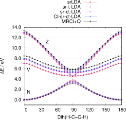
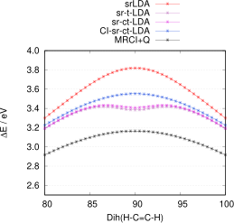

CASSCF and DFT¶
The Complete Active Space Self-Consistent Field (CASSCF) method is effective at describing static correlation effects, which occur in cases such as open-shell molecules or the dissociation of covalent bonds. However, CASSCF is insufficient for describing dynamic correlation and is often too inaccurate for realistic predictions of energies and molecular properties.
Hybrid approaches that combine CASSCF with Density Functional Theory (DFT) have been developed as alternatives to traditional second-order perturbation theory methods like NEVPT2 and CASPT2.
Since ORCA 6.1, the following hybrid CASSCF-DFT methods are available: - Long-range CASSCF short-range DFT (srDFT) - Multi-Configurational Pair Density Functional Theory (MCPDFT)
General Description¶
Multi-Configurational Pair Density Functional Theory¶
MCPDFT evaluates the Kohn-Sham DFT energy
using the one-body density matrix (\(D_{pq}\)) and the two-body density matrix (\(d_{pqrs}\)), both obtained from a preceding CASSCF calculation. To account for spin polarization in open-shell systems and to improve the accuracy in general, the exchange-correlation (xc) energy employs the on-top pair density\(\Pi(r)\)
This enables the computation of alpha and beta electron densities:
For spatial points\(r\) where dynamic correlation is suppressed (\(\rho^2 \ge 2\Pi\)), well-established exchange-correlation functionals from single-reference DFT can be applied directly using Eq. Eq. This technique is known as functional translation.LiManni2014
In the original MCPDFT method,LiManni2014 regions where\(\rho^2 < 2\Pi\) were approximated by setting\(\rho_{\alpha/\beta} = \frac{1}{2}\rho\).
MCPDFT functionals based on this approach are prefixed with t, e.g., tLDA for translated LDA.
However, in many systems, regions with\(\rho^2 < 2\Pi\) contain important information and should not be neglected or approximated.Since\(\rho_{\alpha/\beta}\) becomes complex in these regions, dedicated exchange-correlation functionals and their functional derivatives are required.Becke1995,Rodrigues2023
Using Eq. Eq without approximation is called complex functional translation.Rodrigues2023
These functionals are prefixed with ct, e.g., ctLDA.
In ORCA 6.1 the folloing MCPDFT functionals are available:
List of available MCPDFT functionals.
| MCPDFT Functional | Description |
|---|---|
| tLDA | translated local density approximation (defaults to VWN5) |
| tPBE | translated Perdew, Becke, Ernzerhofer (PBE) |
| tPBE0 | translated PBE0, 75 % PBE exchange, 25 % exact HF exchange |
| ctLDA | complex translated local density approximation (defaults to VWN5) |
| ctPBE | complex translated Perdew, Becke, Ernzerhofer (PBE) |
| ctPBE0 | complex translated PBE0, 75 % PBE exchange, 25 % exact HF exchange |
Note
The original MCPDFT is not variational. A variational form that minimizes the MCPDFT energyScott2024 is not yet available in ORCA.
For excited-state MCPDFT methods, see Sec. casdft.excited.
Long-Range CASSCF Short-Range DFT¶
Dynamic electron correlation is most significant when electrons are close together, making it a short-range phenomenon. The srDFT methodFromager2007 addresses this by applying DFT to the short-range part of the interaction and CASSCF to the long-range (static correlation) component.
The srDFT energy expression is:
where\(\hat{H}^{\text{lr}}\) is the long-range Hamiltonian evaluated with the CASSCF wavefunction\(|0\rangle\), and\(E^{\text{sr-H}}\) and\(E^{\text{sr-xc}}\) are the short-range Hartree and exchange-correlation energies.
Range separation of explicit two-electron interactions for CASSCF and DFT affects two quantities: - the Coulomb operator that is now split into a lr and sr part
leading to range-separated two-electron integrals
and\(g_{pqrs}^{\text{sr}}\).
- dedicated short-range xc functionals in\(E^{\text{sr-xc}}\) that are damped for an increasing fraction of CASSCF
An empirical short-range damping parameter\(\mu\) controls the balance between the short-range and long-range mixing.Setting\(\mu\) to\(0\) (zero) restores the single-reference Kohn-Sham DFT energy, as appropriate for a state-specific ground-state calculation. In contrast, increasing\(\mu\) to very large values (\(\mu > 100\)) effectively recovers the CASSCF solution.
Unlike MCPDFT, srDFT is variationally minimized with respect to orbital and CI coefficients. Currently, this is only implemented for exchange-correlation functionals dependent on one-electron densities. For singlets, only total electron density\(\rho\) is used; for other spin multiplicities, both\(\rho\), spin-density\(m\), and their derivatives are considered.Hedegaard2018
After convergence, the final srDFT energies can be re-evaluated using the on-top pair density as in MCPDFT
The following srDFT functionals are available in ORCA 6.1:
List of available srDFT functionals.
| MCPDFT Functional | Description |
|---|---|
| srLDA | short-range LDA (defaults to VWN5)hirao2001rangeseparation,Paziani2006 |
| srPBE | short-range PBE, also known as Goll, Werner, Stoll (GWS) Goll2005,Goll2006 |
| srPBE0 | short-range PBE0, 75 % srPBE exchange, 25 % exact sr HF exchange |
| sr-ctLDA | complex translated srLDA |
| sr-ctPBE | complex translated srPBE |
| sr-ctPBE0 | complex translated srPBE0 |
Computational Aspects¶
In ORCA 6.1 the CASDFT methods MCPDFT and srDFT are implemented in the TRAH-CASSCF module. They can be invoked by adding the desired functional to the standard CASSCF input.
For example, a state-averaged CASDFT calculation on ethylene with\(\pi\) and\({\pi}^*\) orbitals in the active space:
! TRAH
! sr-ctPBE
%method
RangeSepMu 0.40 # Default value
end
%casscf
nel 2
norb 2
mult 1
nroots 3
end
Note that the RIJK approximation is not yet available for CASDFT.
Note that translated sr functionals are also available.
In that case, complex translation has to be switched off in the %method block
In contrast to single-reference DFT, the RIJ and RIJCOSX approximations are not activated by default. If desired, they must be explicitly given in the ORCA input file:
Excited States¶
Excited states can be calculated using state-averaged (SA) methods as in standard CASSCF calculations.
For MCPDFT, energies are evaluated from state-specific one- and two-body densities of a converged SA-CASSCF calculation.LiManni2014
For srDFT, an approximate energy is first minimized using the averaged densities. Final srDFT energies are then evaluated from state-specific (SS) densities.Helmich-Paris2025
AB


Three lowest potential energy curves of ethylene twist calculated with various srLDA methods.
As shown in fig:CASDFT-c2h4-excited, srDFT with SS densities may produce false minima for twisted ethylene. MCPDFT suffers from similar issues.
To mitigate this, one can diagonalize a linearized CI-DFT Hamiltonian that accounts for deviations from averaged densities:Pedersen2004,Hedegaard2015,Helmich-Paris2025
As shown in fig:CASDFT-c2h4-excited, the CI-DFT variant (e.g., sr-ctLDA) resolves the
false-minimum problem and yields the best agreement with the highly correlated MRCI+Q method.
The CI-DFT approach can be specified via the simple keyword input
or via the method block
In ORCA 6.1 the following CI-DFT keywords are available:
List of available CI-DFT keywords.
| CI-DFT Keyword |
|---|
| CI-ctLDA |
| CI-ctPBE |
| CI-ctPBE0 |
| CI-srLDA |
| CI-srPBE |
| CI-srPBE0 |
| CI-sr-ctLDA |
| CI-sr-ctPBE |
| CI-sr-ctPBE0 |